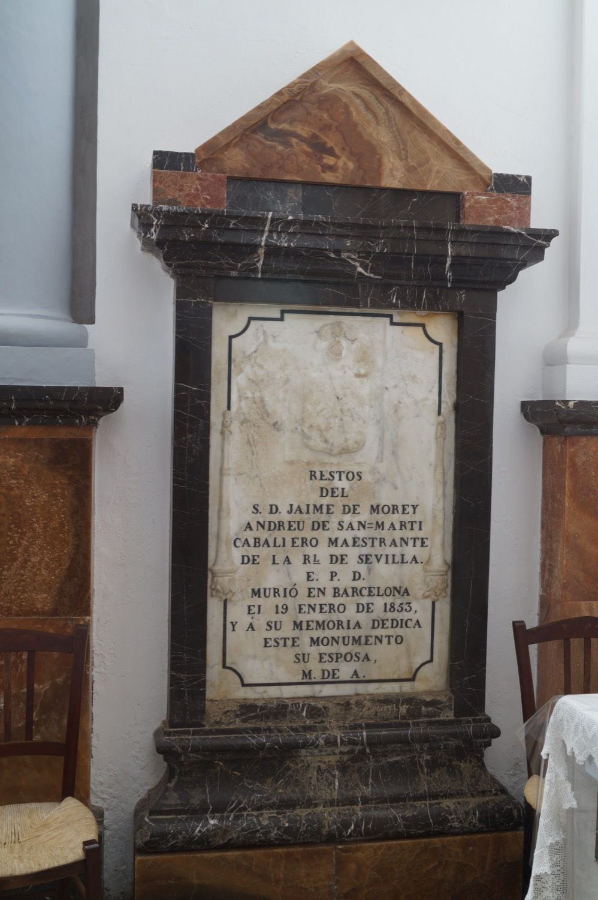

Don Jaume Morei Andreu de Santmartí va ser el noble mallorquí que l’any 1805 donà dues quarterades de terra i les restes de les edificacions de l’antiga alqueria mora de Binialgorfa perquè alguns ermitans procedents de les comunitats de Sant Honorat de Randa i de la Santíssima Trinitat de Valldemossa hi fundassin una ermita dedicada al Naixement de Jesús a Betlem, d'on prové l’actual nom de l’ermita. Morí de pesta bubònica a Barcelona l’any 1853, i va ser necessari un permís especial del governador de Barcelona perquè la seva vídua pogués traslladar-ne el cadàver i fer-lo enterrar aquí.